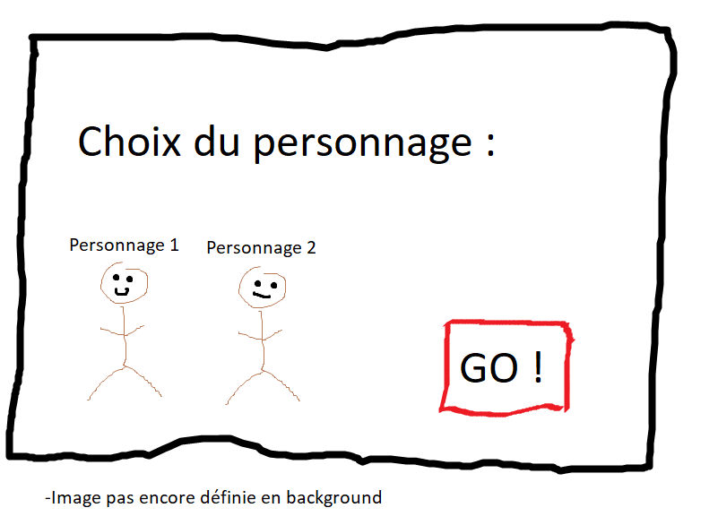
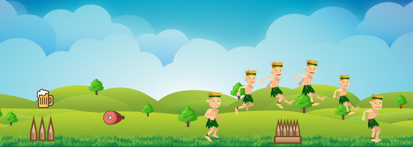
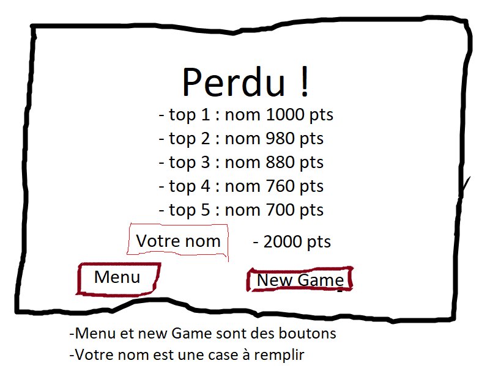
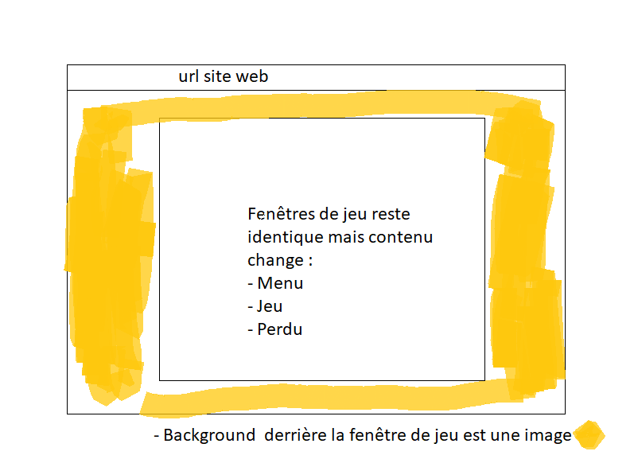

Mockup de notre projet
Par Victor Bonny le 09/03/2019 à 13:00
Dans cette partie nous vous présentons l'allure générale de notre site que nous avons souhaité sobre pour mettre en avant notre jeu.
Tout d'abord le joueura va arriver sur la page principale. C'est la qu'il aura le choix entre deux personnages. Lorsqu'il aura choisi son héro, il pourra le faire glisser vers un endroit dédié à cette effet et commencer la partie

Ensuite, avant de lancer le jeu. Nous allons afficher quelque règles de base en présentant les obstacles, les actions que nous pouvons réaliser devant les obstacles et éventuellement des points bonus.
Nous voilà enfin à la page du jeu. Pour l'affichage de la fenêtre de jeu, nous ne savons pas encore si nous allons faire un Glass-Pane par-dessus la page home ou seulement avec des div.

Pour finir, lorsque le héro ne réuissira pas à franchir un obstacle, il va arriver sur une page de score qui montrera les top 5 meilleurs scores du jeu et lui laissera la possibilité au joueur d'inscrire son nom pour le stocker. S'il a un meilleur score qu'un des top 5, il sera inscrit au classement. Ensuite, sur cette même page, on peut relancer une partie ou aller au menu.

Pour ce qui est du site en général. Nous allons avoir une page d'arrière plan en relation avec notre jeu. Les différentes pages dont la page du menu, des règles, du jeu et du score sera toujours affiché au centre.

Le code source de l'application est disponible sur le github du projet.